บทนี้ตอบคำถาม "ผู้ส่งกับผู้รับประสานงานกันได้ไหม?" (Delivery Control) ของ Data Link Layer
เรียน flow control (คุมความเร็วให้ผู้รับรับทัน), error control แบบ ARQ 3 แบบ — Stop-and-Wait, Go-Back-N, Selective Repeat — พร้อม sequence number, window, timer, ACK และปิดด้วยโปรโตคอลจริง HDLC (frame format, I/S/U frames) และการคำนวณ performance / bandwidth-delay product
ต่อจาก Lecture 5.1 (ตรวจจับ error ได้แล้ว) → บทนี้คือ "เจอ error แล้วส่งใหม่อย่างไร" และนำไปสู่ Lecture 6.1 (medium access)
1. Recap: Data Link Layer
หน้าที่ของ data link layer: Framing, Flow control, Error control, Media access control, Addressing — รับบริการจาก physical layer และให้บริการแก่ network layer (ใช้ทั้ง LANs และ WANs)
2. Flow Control
2.1 ทำไมต้องมี Flow Control? — สมดุลความเร็วผู้ส่งกับผู้รับ
เมื่อมีฝ่ายหนึ่ง ผลิตข้อมูล (sender) และอีกฝ่าย ใช้ข้อมูล (receiver) ต้องควบคุมอัตราการส่งให้ผู้รับประมวลผลได้อย่างมีประสิทธิภาพ
- ส่งเร็วเกินไป → ผู้รับรับไม่ทัน เกิด buffer overflow หรือ frame loss
- ส่งช้าเกินไป → ผู้รับเสียเวลารอ ประสิทธิภาพโดยรวมลดลง
💡 เหมือนเทน้ำใส่แก้ว: เทเร็วไปน้ำล้น เทช้าไปเสียเวลา
2.2 Flow Control และ Buffering
ทั้งสองฝั่งใช้ buffer เป็นที่พักข้อมูลชั่วคราว:
- Sender buffer — เก็บ frame ที่ รอส่ง หรือ รอส่งใหม่ (retransmit)
- Receiver buffer — เก็บ frame ที่ได้รับ จนกว่า ชั้นบนพร้อมประมวลผล
Flow control ควบคุมอัตราการส่งของผู้ส่งไม่ให้ผู้รับรับไม่ไหว — และ feedback ใช้ทั้งสำหรับ flow control และ error recovery
2.3 Feedback และ Error Control
ผู้รับอาจส่ง feedback กลับ:
- ACK (Acknowledgement) — ยืนยันว่ารับ frame สำเร็จ
- Retransmission request / NAK — บอกว่าควรส่ง frame นั้นใหม่
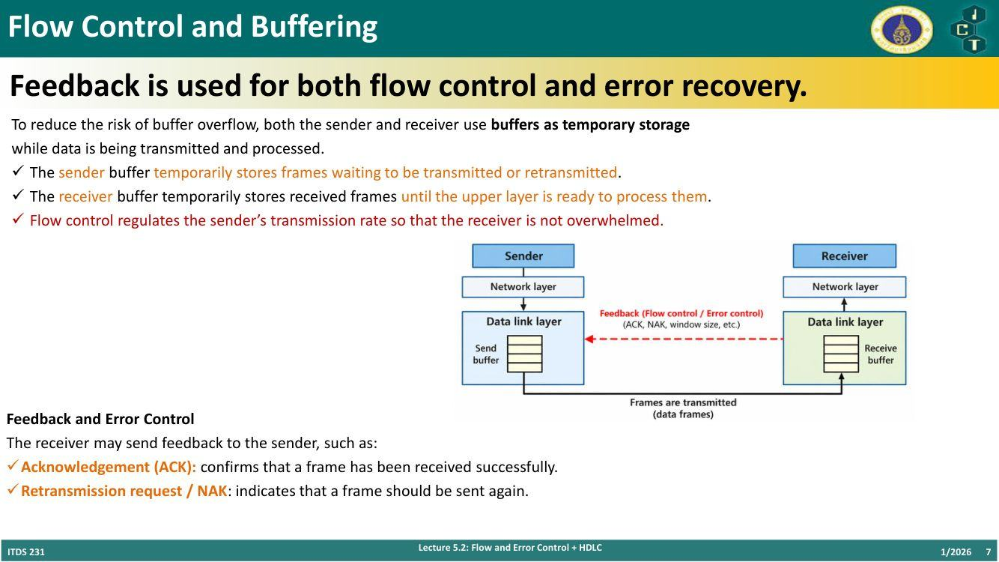
3. ประเภทของ Flow Control Protocols ⭐
| For noiseless channel (ไม่มี error) | For noisy channel (มี error) |
|---|---|
| Simplest | Stop-and-Wait ARQ |
| Stop-and-Wait | Go-Back-N ARQ |
| Selective Repeat ARQ |
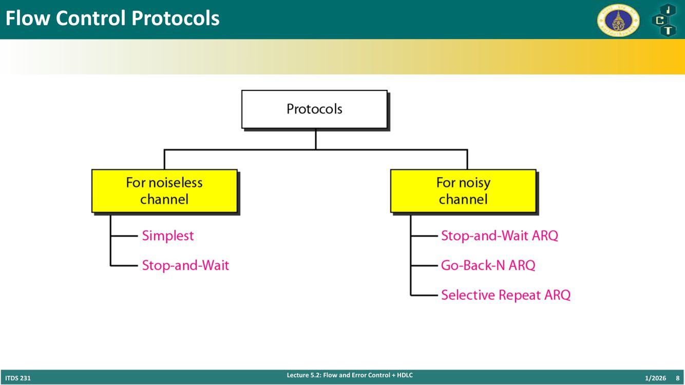
4. Simple Protocol
- ไม่มีทั้ง flow control และ error control
- Sending node: packet มาจาก network layer → ทำเป็น frame แล้วส่ง
- Receiving node: frame มาถึง → ส่ง packet ขึ้น network layer
- ดูได้จาก time-sequence flow diagram (แกนเวลาไหลลงล่าง ลูกศรเฉียง = frame ที่ใช้เวลาเดินทาง)
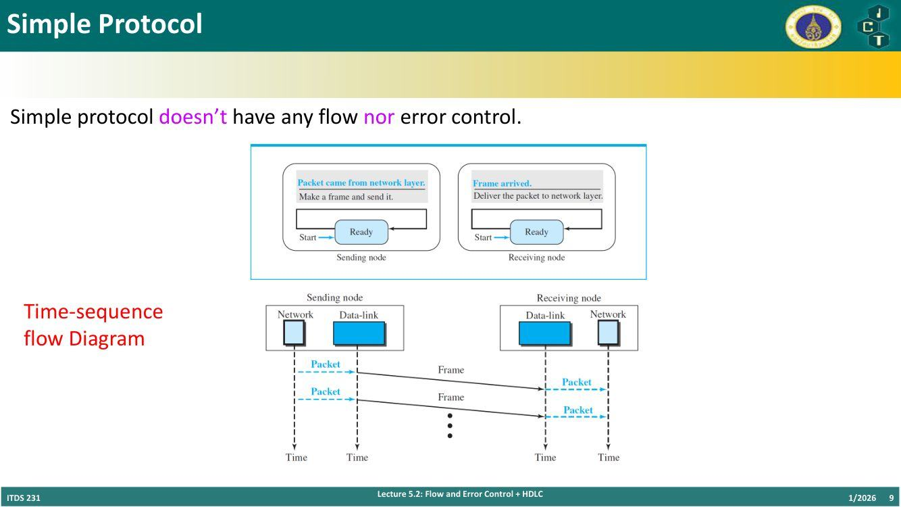
5. Stop-and-Wait ARQ ⭐
5.1 หลักการ — กลไก flow & error control ที่ง่ายที่สุด
- ผู้ส่ง ส่งทีละ 1 frame แล้ว รอ ACK (ผู้รับตรวจ error มักด้วย CRC) ก่อนส่ง frame ถัดไป
- ผู้ส่ง เก็บสำเนา frame ล่าสุด ไว้จนได้ ACK
- ถ้า frame ถูกต้อง → ผู้รับส่ง ACK
- ถ้า frame มี error → ผู้รับ ไม่ส่ง ACK และ ทิ้ง frame → timer ของผู้ส่งหมดเวลา (time out) → ส่งใหม่
⚠️ Stop-and-Wait ส่งได้แน่นอนด้วย frame ค้าง 1 ตัว + timer แต่ ไม่มีประสิทธิภาพบนลิงก์ bandwidth สูงหรือ delay ยาว เพราะเสียเวลารอเปล่า
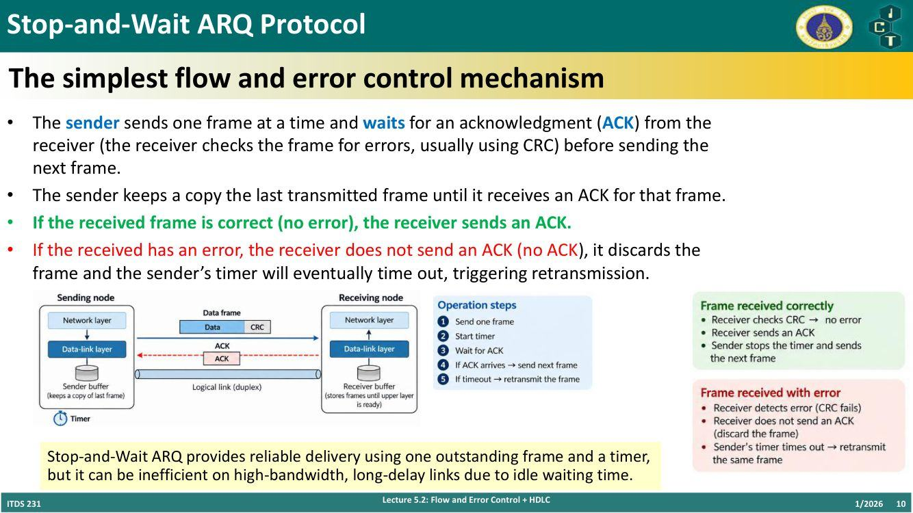
5.2 Sequence และ Acknowledgement Numbers
- ต้องมี sequence number เพื่อแยก frame ใหม่ ออกจาก frame ซ้ำที่ส่งใหม่
- Stop-and-Wait ใช้ แค่ 2 เลข: 0 และ 1 สลับกัน 0, 1, 0, 1, …
- ผู้ส่งมีตัวแปร S = sequence number ของ frame ที่กำลังส่ง
- ผู้รับมีตัวแปร R = sequence number ของ frame ถัดไปที่คาดหวัง
- ผู้รับส่งเฉพาะ positive ACK สำหรับ frame ที่รับได้สมบูรณ์
- ACK number = frame ถัดไปที่ผู้รับคาดหวัง → ACK 1 หมายถึง รับ frame 0 สำเร็จแล้ว รอ frame 1
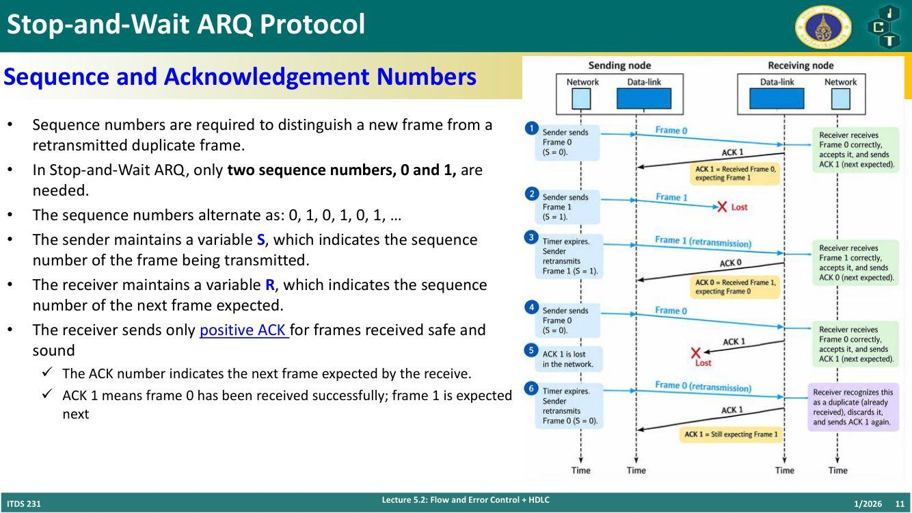
5.3 สถานการณ์ต่าง ๆ ⭐
(ก) Normal Operation S=0 ส่ง Frame 0 → R=0 รับแล้วส่ง ACK 1 → S=1 ส่ง Frame 1 → R=1 รับแล้วส่ง ACK 0 → S=0 …
(ข) Lost Frame
- ส่ง Frame 0 → ได้ ACK 1
- ส่ง Frame 1 → หาย (Lost) ผู้รับไม่ได้รับ จึงไม่ส่ง ACK
- Time-out → ผู้ส่ง ส่ง Frame 1 ใหม่ → ได้ ACK 0
(ค) Lost ACK Frame
- ส่ง Frame 1 → ผู้รับรับแล้ว (R เปลี่ยนเป็น 0) ส่ง ACK 0 → ACK หาย
- Time-out → ผู้ส่งส่ง Frame 1 ซ้ำ
- ผู้รับ คาดหวัง frame 0 แต่ได้ frame 1 → รู้ว่าเป็นของซ้ำ → ทิ้ง frame 1 และ ส่ง ACK 0 อีกครั้ง
(ง) Delayed ACK
- ส่ง Frame 0 → ACK 1 มาช้า → ผู้ส่ง time-out ส่ง Frame 0 ซ้ำ
- ACK 1 (ตัวช้า) มาถึง → ผู้ส่งส่ง Frame 1
- ผู้รับได้ Frame 0 ซ้ำ ขณะ คาดหวัง frame 1 → ทิ้ง frame 0 แล้วส่ง ACK 1 อีกรอบ
- ACK 1 ตัวที่สองมาถึงผู้ส่งตอนรอ ACK 0 → ผู้ส่งทิ้ง (discarded) เพราะเป็น ACK เก่า
- Frame 1 หาย → time-out → ส่ง Frame 1 ใหม่ → ได้ ACK 0
เมื่อผู้รับได้ frame ซ้ำ: (1) รู้จาก sequence number ว่าซ้ำ (2) ทิ้ง frame ซ้ำ (3) ส่ง ACK ที่เหมาะสมอีกครั้ง
💡 Sequence number → ตรวจ frame ซ้ำ / ACK number → ตรวจ ACK เก่าหรือที่มาช้า
| Normal | Lost Frame |
|---|---|
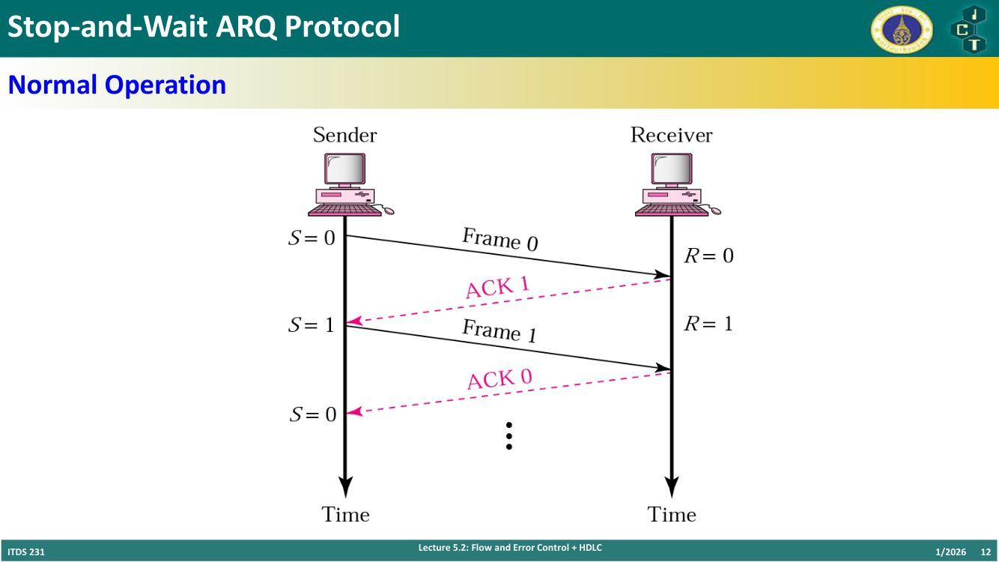 |
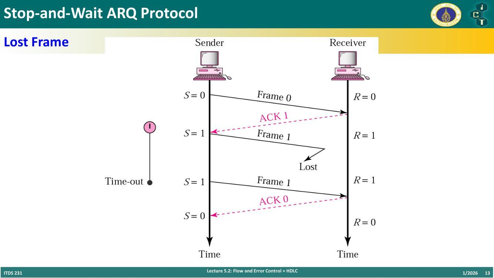 |
| Lost ACK | Delayed ACK |
|---|---|
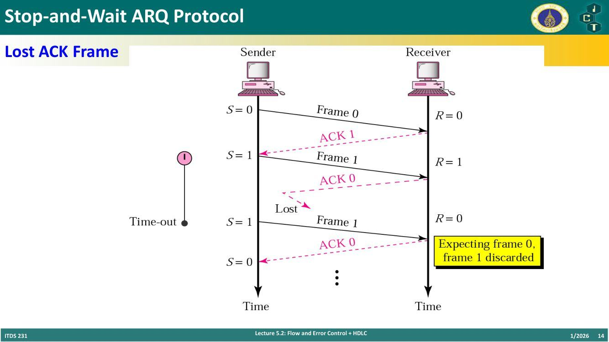 |
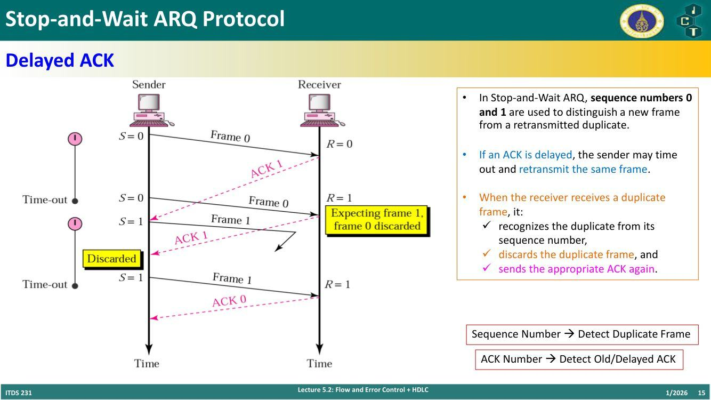 |
6. Pipelining
- Pipelining = ผู้ส่ง ส่งหลาย frame ก่อนรอ ACK
- หลาย frame อยู่ระหว่างทางพร้อมกัน → เพิ่ม link utilization และประสิทธิภาพ
- ARQ ที่ใช้ pipelining: Go-Back-N ARQ, Selective Repeat ARQ
- ⚠️ Stop-and-Wait ARQ ไม่มี pipelining
Pipelining = มี outstanding frames หลายตัวก่อน ACK มาถึง
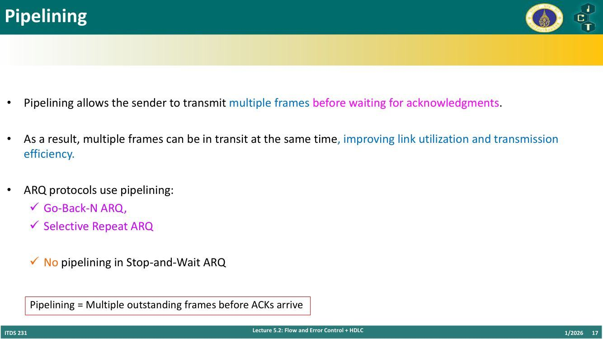
7. Go-Back-N ARQ (GBN) ⭐⭐
7.1 Sequence Numbers
- frame จากสถานีส่งถูก นับเลขตามลำดับ และต้องใส่เลข (Ns/Nr) ใน header → ต้องจำกัดจำนวนบิต
- m บิต → 2^m เลข (0 ถึง 2^m − 1) แล้ววนซ้ำ
- ถ้า m = 3: 0, 1, 2, 3, 4, 5, 6, 7, 0, 1, 2, …
7.2 Send Window
- ผู้ส่งส่งได้ สูงสุด W frames โดยไม่ต้องรอ ACK ทีละตัว
- frame ที่ ส่งแล้วแต่ยังไม่ได้ ACK = outstanding frames
- ผู้ส่ง เก็บสำเนา outstanding frames ทั้งหมด จนกว่าจะได้ ACK → ใช้แนวคิด window ครอบ outstanding frames
- ขนาด send window สูงสุด W ≤ 2^m − 1
ส่วนต่าง ๆ ของ send window (ตัวชี้ S_f = first outstanding, S_n = next to send):
| ส่วน | สถานะ |
|---|---|
| ซ้ายของ S_f | ส่งแล้ว, ได้ ACK แล้ว, ลบทิ้งแล้ว (sent, acknowledged, purged) |
| S_f ถึงก่อน S_n | outstanding (ส่งแล้ว ยังไม่ได้ ACK) |
| S_n ถึงขอบขวา window | ส่งได้เมื่อ process ส่งข้อมูลมา |
| ขวาของ window | ยังส่งไม่ได้ |
- Sliding: window เลื่อนได้หนึ่งหรือหลายช่องเมื่อได้ ACK ที่ไม่มี error โดย ackNo ≥ S_f และ < S_n (คิดแบบ modular)
- ตัวอย่าง: ก่อนเลื่อน S_f = 4; ได้ ACK 6 → เลื่อนให้ S_f = 6 (frame 4, 5 ถูก ACK แล้ว — cumulative)
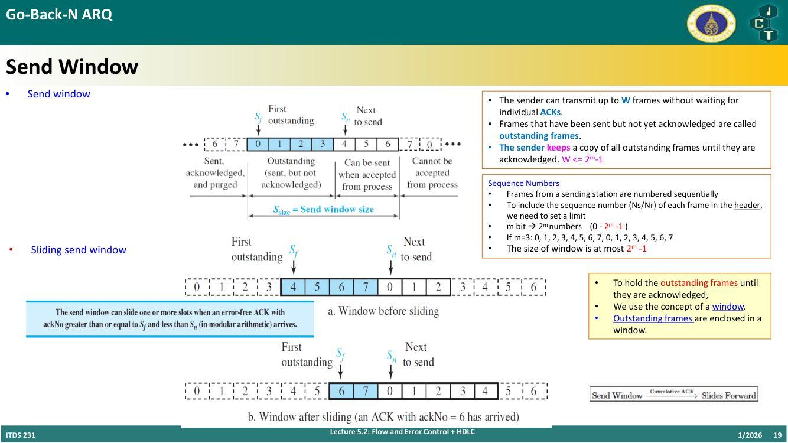
7.3 Receive Window
- Receive window ของ GBN มีขนาด 1 เสมอ
- ผู้รับรับ เฉพาะ frame ถัดไปที่คาดหวัง (ระบุด้วย R_n)
- ถ้า frame ที่คาดหวังมาถึงถูกต้อง: รับไว้ → เลื่อน R_n ไปเลขถัดไป → ส่ง cumulative ACK
- frame ที่มาผิดลำดับ (out-of-order) ถูกทิ้ง
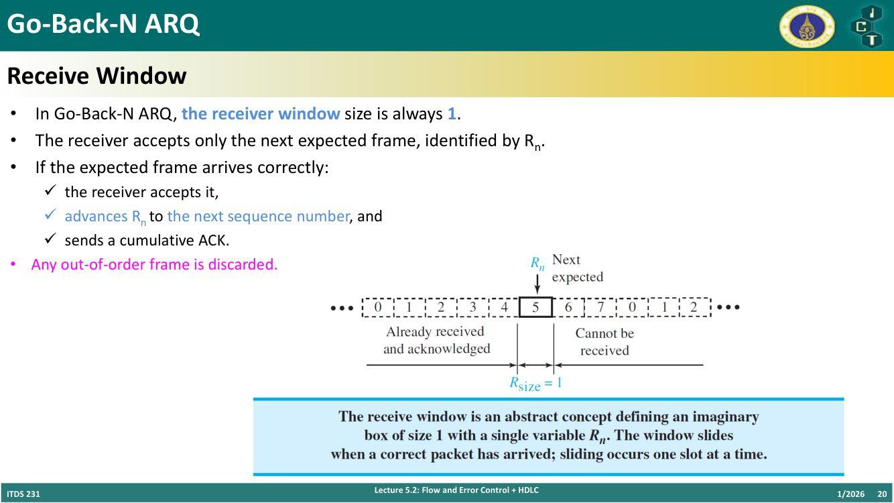
7.4 Timers และ Acknowledgement
Timers:
- ผู้ส่งมี timer ตัวเดียว สำหรับ outstanding frame ที่เก่าที่สุด
- ผู้รับ ไม่มี retransmission timer
- ถ้า timer หมดเวลา → ผู้ส่ง ส่งใหม่ตั้งแต่ frame เก่าสุดที่ยังไม่ได้ ACK และทุก outstanding frame ถัดไป ("go back N")
Acknowledgement:
- ผู้รับส่ง positive ACK เฉพาะ frame ที่ถูกต้องและมาตามลำดับ
- GBN ใช้ cumulative acknowledgments
- ACK n = ทุก frame ก่อน n ได้รับแล้ว และรอ frame n
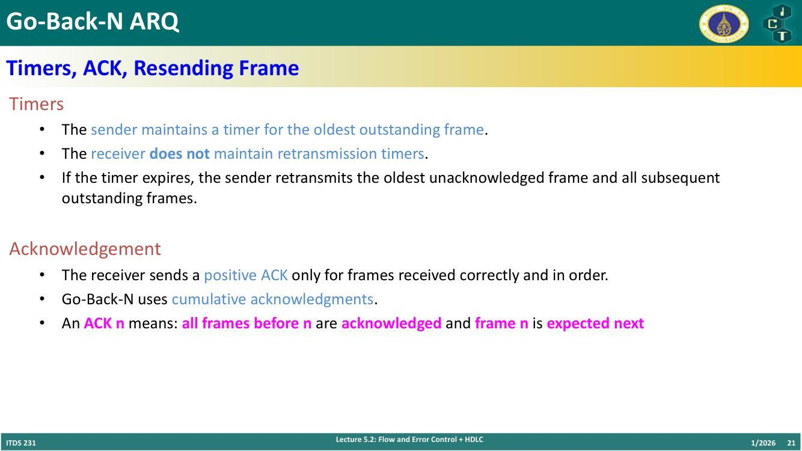
ตัวอย่าง timeline (Req = network layer มี packet ใหม่, fArr = data frame มาถึงผู้รับ, aArr = ACK มาถึงผู้ส่ง):
- ส่ง Frame 0 (start timer) → ได้ ACK 1 (stop timer)
- ส่ง Frame 1 (start timer), Frame 2, Frame 3 ต่อกัน
- ACK 2 หาย, ACK 3 มาถึง → restart timer (frame 0–2 ถือว่า ACK แล้วแบบ cumulative)
- ACK 4 มาถึง → stop timer (ไม่มี outstanding frame เหลือ)
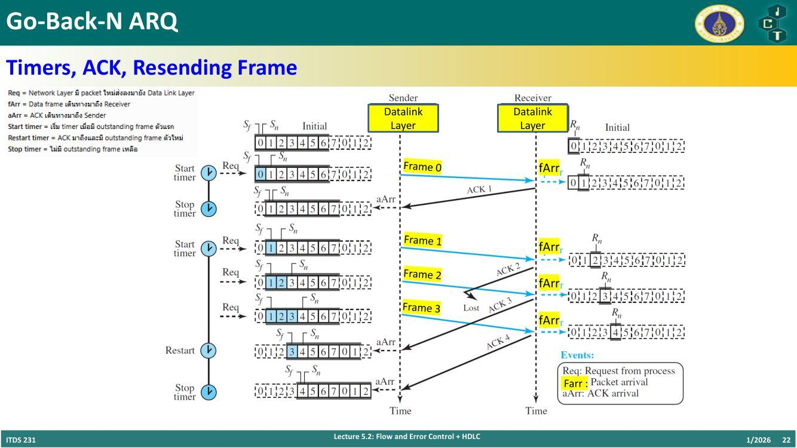
7.5 ขนาด Send Window ต้อง < 2^m ⭐
กฎ: send window < 2^m; receive window = 1 เสมอ
ตัวอย่าง m = 2 (เลข 0–3):
| a. Window size = 3 (< 2^m) ✅ | b. Window size = 4 (= 2^m) ❌ |
|---|---|
| ส่ง Frame 0, 1, 2 → ACK ทั้งหมดหาย → time-out ส่ง Frame 0 ซ้ำ | ส่ง Frame 0, 1, 2, 3 → ACK ทั้งหมดหาย → time-out ส่ง Frame 0 ซ้ำ |
| ผู้รับรอ frame 3 → ได้ frame 0 → รู้ว่าเป็นของซ้ำ → Correctly discarded | ผู้รับรอ frame 0 ของรอบใหม่ พอดี → รับ frame 0 เก่า → Erroneously accepted |
เหตุผล: ถ้า ACK ของชุดแรกหายและ timeout ผู้ส่งอาจ retransmit frame 0 เก่า ขณะที่ผู้รับกำลังคาดหวัง frame 0 ใหม่ของรอบถัดไปพอดี → ผู้รับ แยกไม่ได้ ว่าเป็น frame เก่าที่ส่งซ้ำ หรือ frame ใหม่
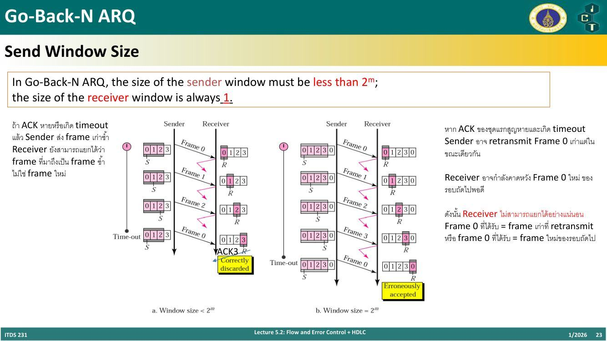
7.6 สถานการณ์ GBN
Normal Operation: ส่ง Frame 0, 1 → ACK 2 → Frame 2 → ACK 3 → Frame 3 (window เลื่อนไปเรื่อย ๆ)
Lost Frame:
- ส่ง Frame 0, 1 → ACK 2
- ส่ง Frame 2 → หาย
- ส่ง Frame 3 → ผู้รับรอ frame 2 อยู่ → Frame 3 discarded, not in the window
- Time-out → ส่งใหม่ Frame 2 และ Frame 3 (resent ทั้งคู่)
- ได้ ACK 3, … ต่อไป
| Normal Operation | Lost Frame |
|---|---|
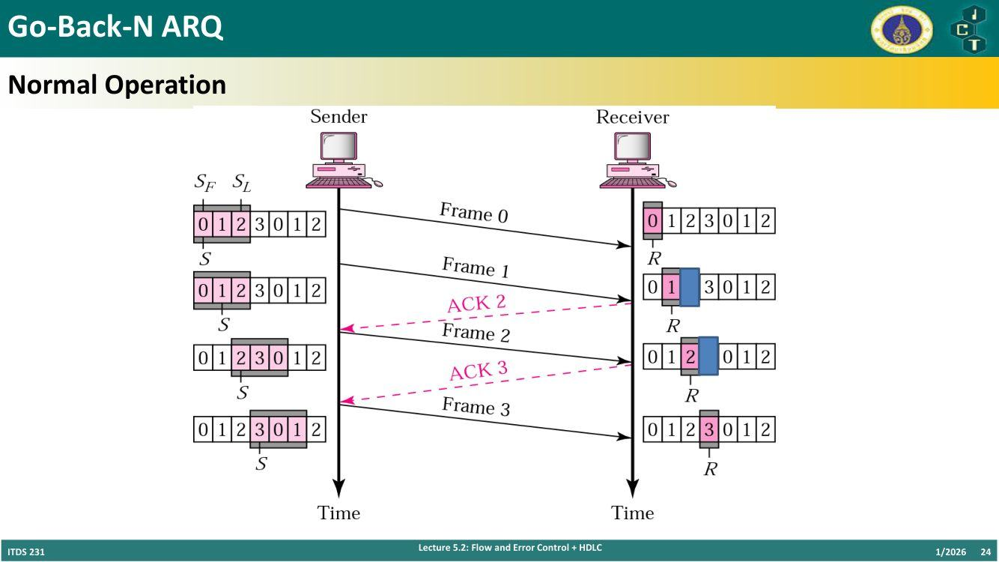 |
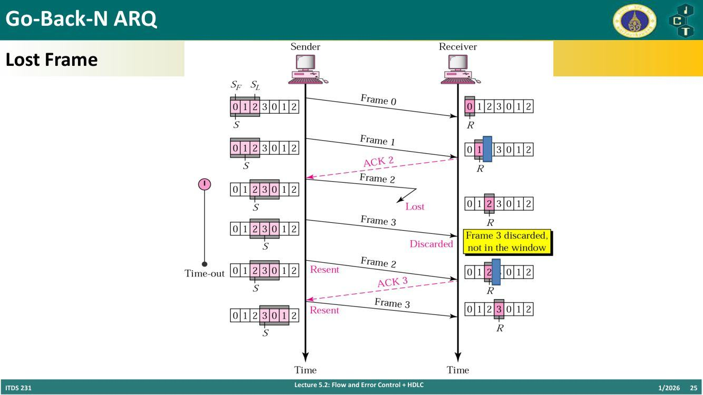 |
7.7 ACK ที่เสีย หาย หรือมาช้า
- เพราะ cumulative ACK ถ้า ACK หาย ACK ตัวหลังก็ยังยืนยัน frame เหล่านั้นได้
- ตัวอย่าง: ผู้รับส่ง ACK1, ACK2, ACK3, ACK4 → ถ้า ACK2 หาย แต่ ACK3 มาก่อน timeout → ไม่ต้องส่งใหม่ เพราะ "ACK3 ยืนยัน frame 0, 1, 2 แบบสะสม"
- ถ้าไม่มี ACK ที่เหมาะสมมาก่อน timer หมด → ส่งใหม่ตั้งแต่ frame เก่าสุด ("timeout go back and retransmit")
- Delayed ACK ไม่จำเป็นต้องทำให้ส่งใหม่ — ส่งใหม่เฉพาะเมื่อ cumulative ACK ที่คาดไม่มาก่อน timeout; ถ้า cumulative ACK ตัวหลังมาก่อน ACK ตัวที่ช้าก็ไม่จำเป็นแล้ว
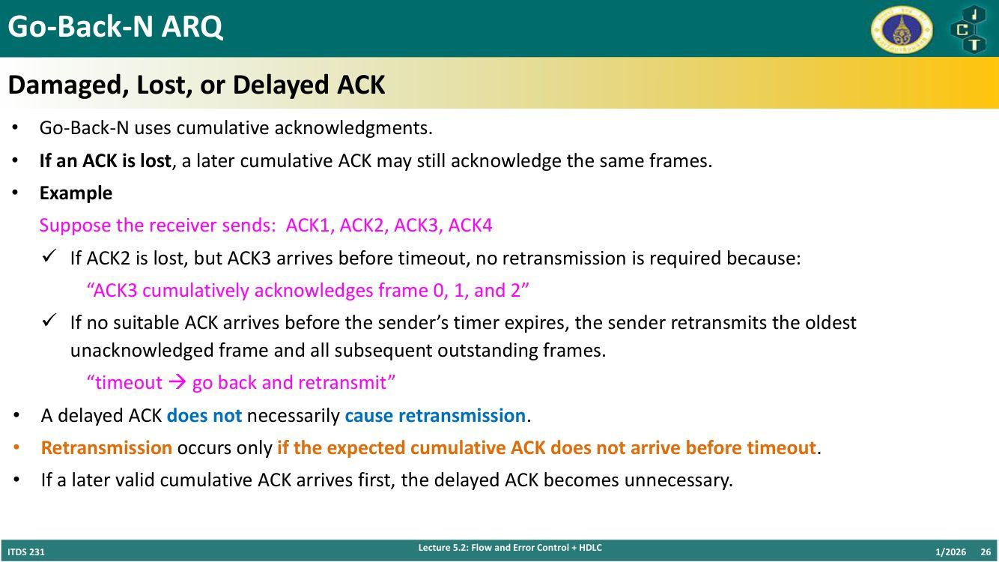
7.8 GBN vs Stop-and-Wait และ Piggybacking
- Stop-and-Wait = กรณีพิเศษของ GBN ที่ใช้ sequence number แค่ 0, 1 และ send window = 1
- Bidirectional communication: ทั้ง Stop-and-Wait และ GBN ทำงานสองทิศทางได้ โดยแต่ละทิศมี sender state/window และ receiver state/window ของตัวเอง
- Piggybacking: เพื่อเพิ่มประสิทธิภาพ ใส่ ACK ไปใน data frame ที่เดินทางสวนทาง → Data + ACK ใน frame เดียวกัน
💡 Piggyback = "ขี่หลังหมู" — ACK ขอติดรถ data frame ไปด้วย ไม่ต้องส่ง frame แยก
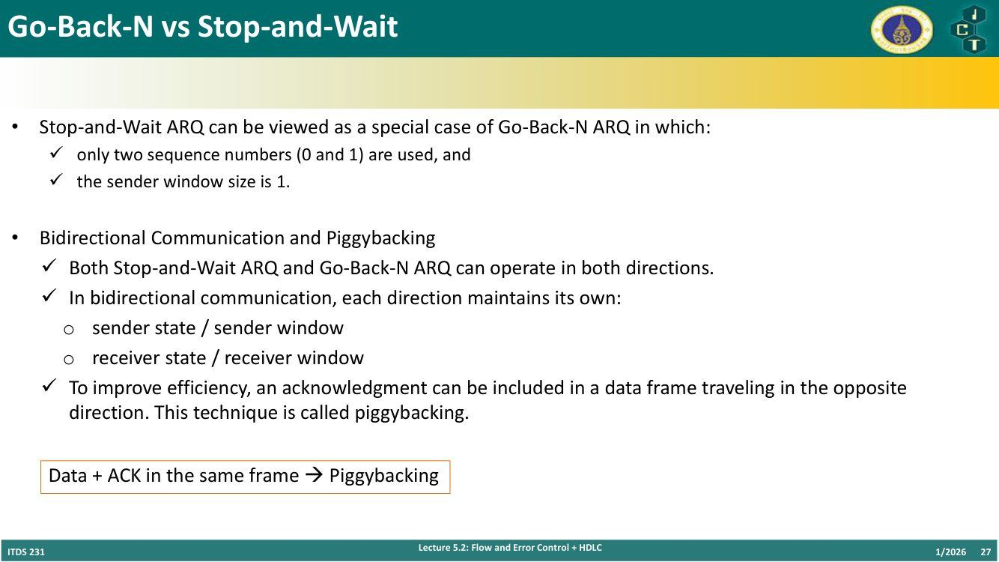
7.9 ข้อจำกัดของ GBN
- ข้อดี: receiver ออกแบบง่าย (window = 1) รับเฉพาะ frame ถัดไป ไม่ต้อง buffer frame ผิดลำดับ
- ข้อเสีย: ไม่มีประสิทธิภาพเมื่อ frame หาย/เสียบ่อย
- frame เดียวหาย → ต้องส่งใหม่ตั้งแต่ frame นั้น และทุก outstanding frame ถัดไป
- บาง frame ผู้รับได้รับถูกต้องแล้ว แต่ถูกทิ้งเพราะมาผิดลำดับ
- การส่งซ้ำบ่อย: เปลือง bandwidth, เพิ่ม delay, และ อาจทำให้ congestion แย่ลง
8. Selective Repeat ARQ (SR) ⭐⭐
8.1 หลักการ
- sliding-window protocol สำหรับส่ง frame อย่างเชื่อถือได้
- รองรับ pipelined transmission (หลาย frame ระหว่างทางก่อนได้ ACK)
- ต่างจาก GBN: ผู้รับ รับและ buffer frame ที่ถูกต้องแต่มาผิดลำดับได้
- ถ้า frame หาย/เสีย → ผู้ส่ง ส่งใหม่เฉพาะ frame นั้น ไม่ใช่ทุก outstanding frame
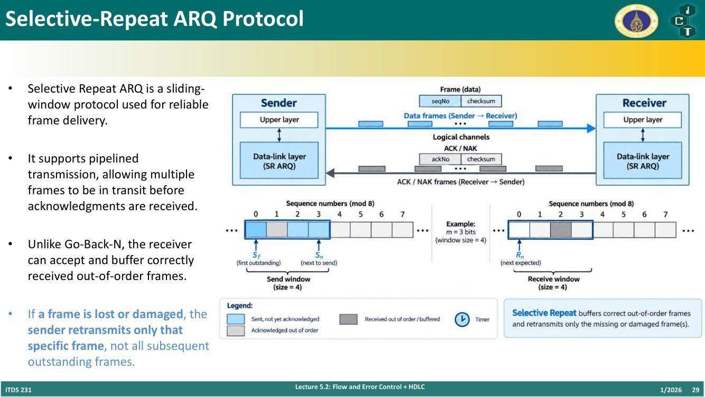
8.2 Sender and Receiver Windows ⭐
- sequence number m บิต → 2^m เลข
- เพื่อ ไม่ให้สับสนเมื่อเลขวนรอบ ขนาด window ต้อง ไม่เกินครึ่งหนึ่งของ sequence-number space: $$W_S \le 2^{m-1}, \quad W_R \le 2^{m-1}$$
- ปกติ sender และ receiver window มีขนาดสูงสุดเท่ากัน
- ผู้รับรับได้ เป็นช่วง ของ sequence numbers ภายใน receive window
ตัวอย่าง: sequence number 3 บิต (0–7), receive window = 4, ผู้รับกำลังรอช่วง 0, 1, 2, 3
-
ได้รับ Frame 0, Frame 2, Frame 3 (Frame 1 ยังไม่มา)
-
SR: รับ Frame 0, 2, 3 ได้ เก็บใน buffer แล้วรอ Frame 1
-
GBN: รับได้เฉพาะ "next expected frame" (frame 2, 3 ถูกทิ้ง)
-
frame ผิดลำดับที่ถูกต้องจะ ถูก buffer จนกว่า frame ที่หายมาถึง
-
ผู้รับอาจใช้ NAK (negative acknowledgement) / selective reject ระบุ frame ที่หาย/เสีย เพื่อขอส่งใหม่ ก่อน timeout
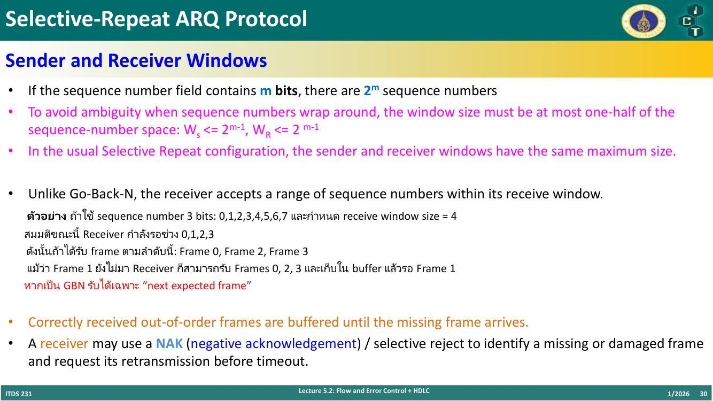
8.3 SR: Lost Frame
- ส่ง Frame 0, 1 → ACK 2
- ส่ง Frame 2 → หาย
- ส่ง Frame 3 → ผู้รับ รับไว้ใน buffer (อยู่ใน window) และส่ง NAK 2
- ผู้ส่ง ส่งใหม่เฉพาะ Frame 2 (resent)
- ผู้รับได้ Frame 2 → ส่ง frame 2, 3 ขึ้นชั้นบนพร้อมกัน
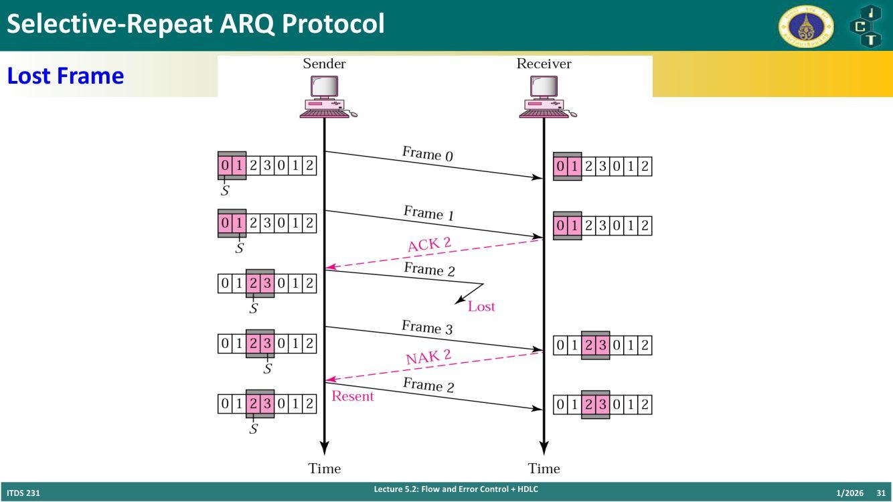
8.4 ทำไม window ต้อง ≤ ครึ่งหนึ่งของ 2^m? ⭐
ตัวอย่าง m = 2 → ขนาด window (ครึ่งหนึ่ง) = 2²/2 = 2 → เปรียบเทียบ window 2 กับ 3
| a. Window size = 2^(m−1) = 2 ✅ | b. Window size > 2^(m−1) (= 3) ❌ |
|---|---|
| ส่ง Frame 0, 1 → ACK หาย → time-out ส่ง Frame 0 ซ้ำ | ส่ง Frame 0, 1, 2 → ACK หาย → time-out ส่ง Frame 0 ซ้ำ |
| receive window ตอนนี้คือ {2, 3} → frame 0 ไม่อยู่ใน window → Correctly discarded | receive window ตอนนี้คือ {3, 0, 1} → frame 0 อยู่ใน window → Erroneously accepted (เข้าใจว่าเป็น frame 0 ใหม่) |
ใน Selective Repeat ขนาด sender และ receiver window ได้สูงสุดครึ่งหนึ่งของ 2^m (2^m/2 = 2^(m−1))
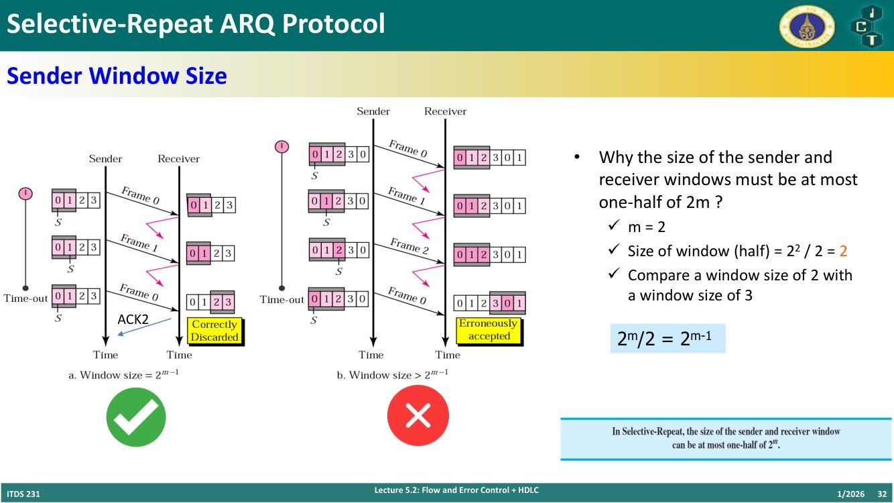
8.5 Timer และ Acknowledgment
Timer:
- แต่ละ outstanding frame จัดการแยกกันอิสระ
- ในเชิงแนวคิด ผู้ส่งมี timer แยกสำหรับแต่ละ outstanding frame
- timer ของ frame ไหนหมด → ส่งใหม่เฉพาะ frame นั้น (Timeout of Frame n → Retransmit Frame n)
- ต่างจาก GBN ที่ timeout แล้วส่งใหม่ตั้งแต่ frame เก่าสุดและทุกตัวถัดไป
Acknowledgments:
- SR ใช้ individual acknowledgments สำหรับแต่ละ frame ที่รับถูกต้อง
- ผู้รับ ACK frame ได้ แม้มาผิดลำดับ ถ้า sequence number อยู่ใน receive window
- frame ผิดลำดับที่ถูกต้อง buffer ไว้จนกว่า frame ก่อนหน้าที่หายมาถึง
- อาจใช้ NAK / selective reject ขอส่งใหม่เฉพาะ frame
💡 GBN: frames treated as a group / SR: frames treated individually
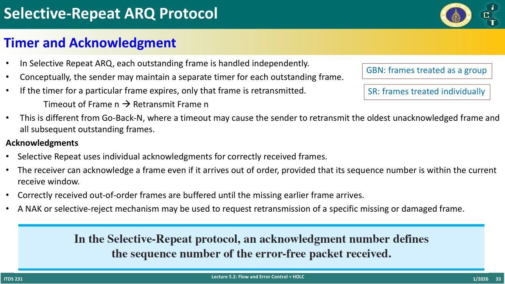
8.6 SR: Time Sequence Flow Diagram
- Request → ส่ง Frame 0 → ผู้รับ: Frame 0 delivered → ACK 1
- ส่ง Frame 1 → หาย (Lost)
- ส่ง Frame 2 → ผู้รับ buffer ไว้ (SR รับ frame ผิดลำดับได้และ buffer ไว้)
- ส่ง Frame 3 → ผู้รับ buffer ไว้ และส่ง NAK 1
- ผู้ส่ง Frame 1 (resend) — ส่งซ้ำเฉพาะ frame ที่หายหรือเสียหาย
- ผู้รับได้ Frame 1 → Frames 1, 2, 3 delivered พร้อมกัน → ส่ง ACK 4
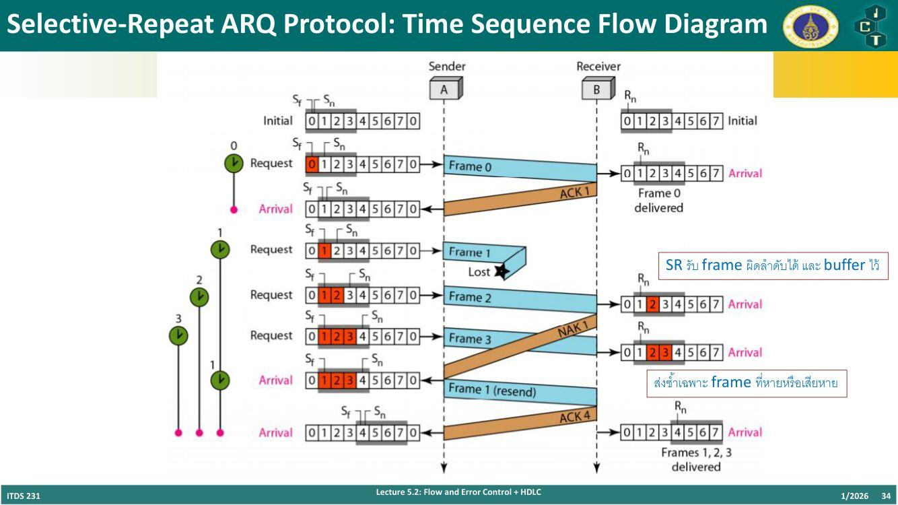
9. เปรียบเทียบ Stop-and-Wait / Go-Back-N / Selective Repeat ⭐
| Stop-and-Wait | Go-Back-N | Selective Repeat | |
|---|---|---|---|
| Pipelining | ❌ | ✅ | ✅ |
| Sequence numbers | 0, 1 | 0 ถึง 2^m − 1 | 0 ถึง 2^m − 1 |
| Send window | 1 | ≤ 2^m − 1 (เลขคี่เสมอ) | ≤ 2^(m−1) (เลขคู่เสมอ) |
| Receive window | 1 | 1 | ≤ 2^(m−1) |
| Frame ผิดลำดับ | — | ทิ้ง | buffer ไว้ |
| Timer | 1 ตัว | 1 ตัว (frame เก่าสุด) | ต่อ frame |
| ACK | ACK = frame ถัดไป | cumulative | individual (+ NAK) |
| เมื่อ frame หาย | ส่ง frame นั้นใหม่ | ส่งใหม่ frame นั้นและทุกตัวถัดไป | ส่งใหม่ เฉพาะ frame นั้น |
| ความซับซ้อน receiver | ง่ายสุด | ง่าย | ซับซ้อน (ต้อง buffer, sort) |
| ประสิทธิภาพเมื่อ error บ่อย | ต่ำ | ต่ำ (ส่งซ้ำเยอะ) | ดีที่สุด |
10. HDLC (High-Level Data Link Control)
10.1 ภาพรวม
- โปรโตคอล data-link แบบ bit-oriented มาตรฐาน สำหรับลิงก์ serial แบบ point-to-point และ multipoint
- Core concepts:
- flag-based framing และ bit stuffing
- flow & error control ด้วย sequence numbers, ACKs และ ARQ
- ทำงานได้ทั้ง half-duplex และ full-duplex
- Operating modes:
- Unacknowledged Connectionless Mode
- Connection Oriented Mode:
- NRM — Normal Response Mode (มี primary สั่ง secondary ตอบ)
- ABM — Asynchronous Balanced Mode (ทั้งสองฝั่งเท่าเทียมกัน)
- ไฟล์ตัวอย่าง Wireshark: PPPHandshake.cap, PPP-config.cap (LCP, IPCP), ppp_lcp_ipcp.pcap, ppp-dialup-munged.pppd (https://wiki.wireshark.org/SampleCaptures)
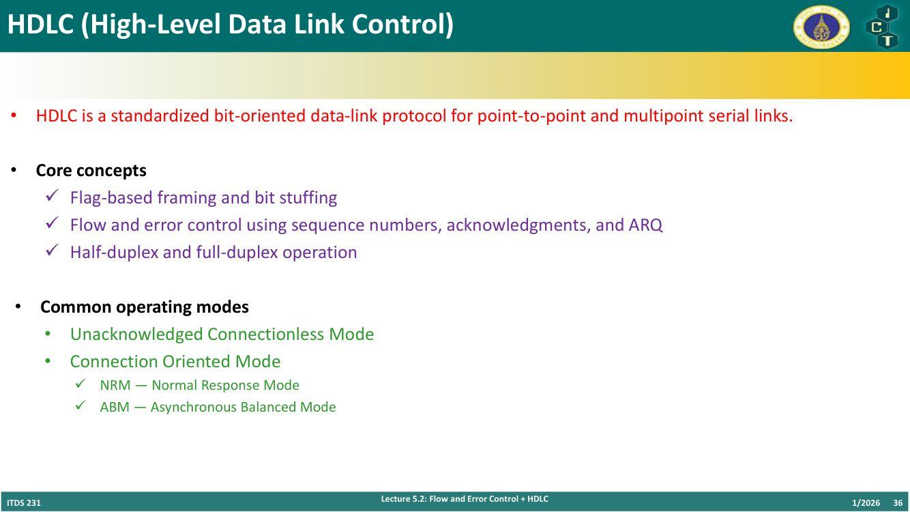
10.2 Connectionless vs Connection-oriented
| Connectionless link service | Connection-oriented link service |
|---|---|
| แต่ละ frame จัดการแยกกัน | สร้าง logical link (connection) ก่อน ส่งข้อมูล และ ปิด หลังจบ |
| ไม่มี session ระดับลิงก์ก่อนส่งข้อมูล | อาจเก็บ sequence numbers, ACKs, flow-control state |
| frame อาจหาย ซ้ำ หรือไม่เรียงลำดับ เว้นแต่ชั้นอื่น (เช่น transport) จัดการให้ | ใช้ในโปรโตคอล/โหมด data-link บางตัว — ไม่ใช่แค่ transport protocol |
→ HDLC กำหนดทั้งโหมด connection-oriented และ connectionless
10.3 HDLC Frame Format ⭐
| Flag | Address | Control | Information | FCS | Flag |
|---|
- Control field: 1 หรือ 2 ไบต์ ใช้สำหรับ flow และ error control
- Information field: ข้อมูลผู้ใช้จาก network layer หรือข้อมูลจัดการเครือข่าย (มีเฉพาะใน I- และ U-frames); ความยาว คงที่ภายในแต่ละเครือข่าย
- FCS field (Frame Check Sequence): การตรวจ error ของ HDLC — เป็น ITU-T CRC ขนาด 2 หรือ 4 ไบต์
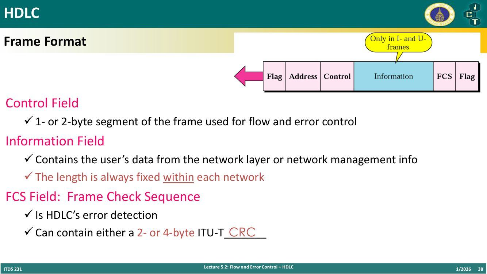
10.4 HDLC / PPP / Cisco HDLC
| Format | โครงสร้าง |
|---|---|
| HDLC | Flag (0x7E) | Address | Control | Information | FCS | Flag (0x7E) |
| PPP | Flag (0x7E) | Address | Control | Protocol | Information | FCS | Flag — (ปกติ Address = 0xFF, Control = 0x03) |
| Cisco HDLC | Flag (0x7E) | Address | Control | Type (Protocol) | Data | FCS | Flag |
- Common features: flag delimiter ทั้งสองปลาย, คง Address และ Control field จาก HDLC-style framing, FCS ตรวจ error
- Key differences:
- HDLC: generic bit-oriented data-link frame
- PPP: เพิ่ม Protocol field ระบุโปรโตคอลชั้นบน; มาตรฐานเปิด
- Cisco HDLC: proprietary ของ Cisco; ใช้ Type/Protocol field
- PPP และ Cisco HDLC ปรับส่วนระบุ payload แต่คงโครงสร้าง frame แบบ HDLC ไว้
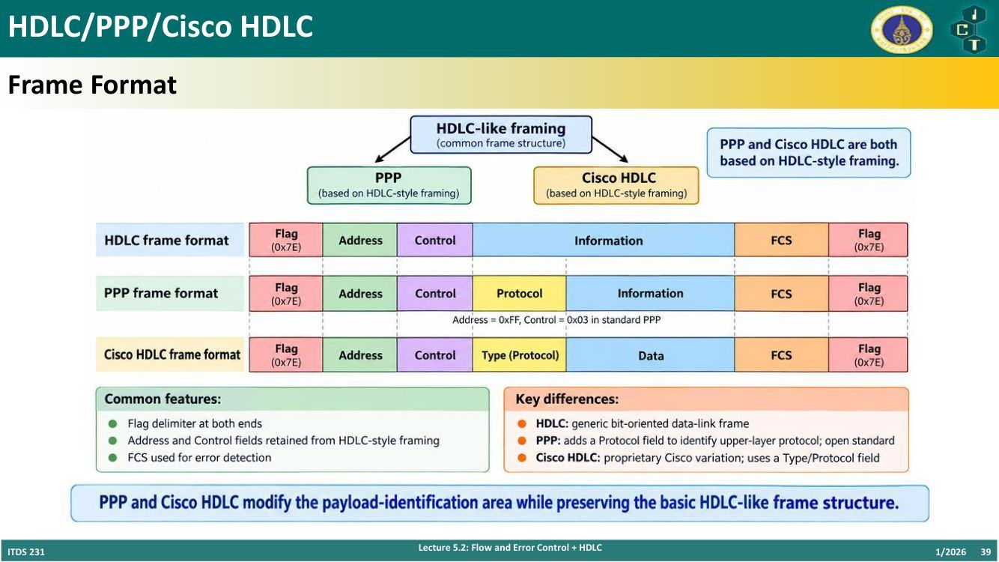
10.5 HDLC / PPP / Cisco HDLC / LAPB / Frame Relay / ATM
| Format | ลักษณะ |
|---|---|
| HDLC, PPP, Cisco HDLC | ตามข้อ 10.4 |
| LAPB | Flag | Address | Control | Information | FCS | Flag — HDLC-based protocol สำหรับ X.25 |
| Frame Relay | Flag | Q.922 Address / DLCI | Information | FCS | Flag — frame WAN มี flag คั่น, header Q.922 แบบย่อ, ความยาวแปรผัน; address field มี DLCI และบิต congestion/discard เช่น FECN, BECN, DE |
| ATM | Header (5 bytes) + Payload (48 bytes) = fixed 53-byte cell — cell relay ไม่ใช้ flag คั่นแบบ HDLC |
- Common HDLC-style traits: flag delimiter ทั้งสองปลาย, FCS ตรวจ error, variable-length frames, ใช้ที่ data-link layer (ใช้กับ HDLC, PPP, Cisco HDLC, LAPB)
- สรุป: HDLC, LAPB, PPP, Cisco HDLC สัมพันธ์กันผ่าน HDLC-style framing; Frame Relay เป็นเทคโนโลยี WAN ที่เกี่ยวข้อง; ATM ต่างโดยพื้นฐาน เพราะใช้ fixed-size cells
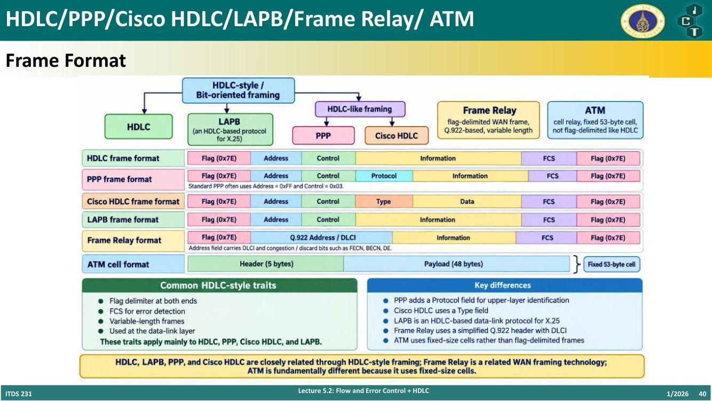
10.6 HDLC Frame Types ⭐
| ชนิด | ใช้ทำอะไร |
|---|---|
| I-frames (Information) | ส่ง ข้อมูลผู้ใช้ และข้อมูลควบคุมที่เกี่ยวกับข้อมูลนั้น (piggybacking) |
| S-frames (Supervisory) | ส่ง เฉพาะข้อมูลควบคุม |
| U-frames (Unnumbered) | สงวนไว้สำหรับ system management |
10.7 I-Frame
Control field: บิตแรกเป็น 0 | N(S) 3 บิต | P/F | N(R) 3 บิต
- P/F (Poll/Final):
- 0 = Poll เมื่อ primary ส่งไป secondary
- 1 = Final เมื่อ secondary ส่งไป primary
- N(S): sequence number ของ frame ที่กำลังส่ง
- N(R): ค่า ACK เมื่อใช้ piggybacking
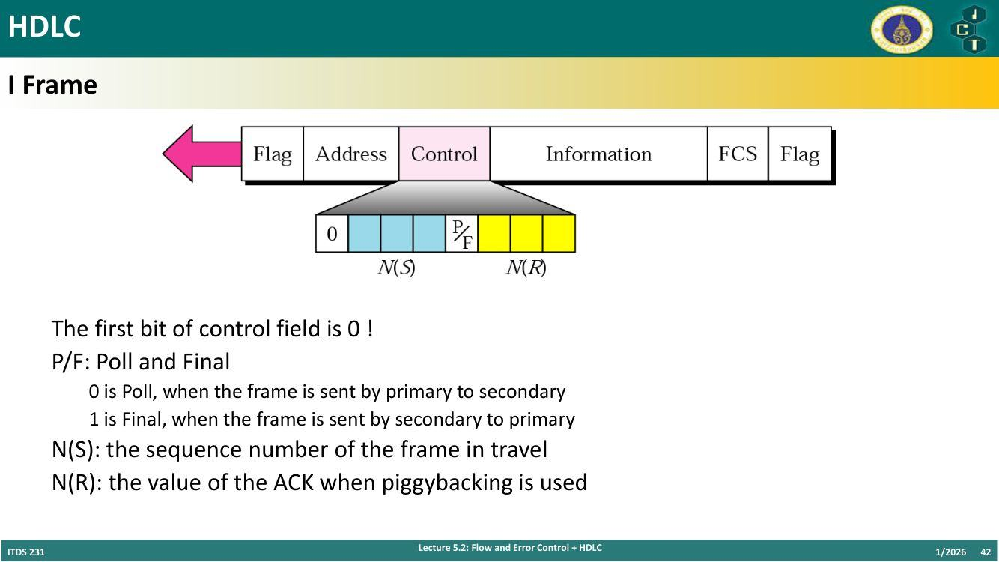
10.8 S-Frame ⭐
Control field: 2 บิตแรกเป็น 10 | Code 2 บิต | P/F | N(R) 3 บิต
- ใช้สำหรับ flow and error control เมื่อ piggybacking ทำไม่ได้หรือไม่เหมาะสม
- N(R): ตรงกับ ACK หรือ NAK
| Code | ชื่อ | ความหมาย |
|---|---|---|
| 00 | RR — Receiver Ready | ACK รับได้สมบูรณ์ |
| 01 | RNR — Receiver Not Ready | ACK แต่ผู้รับ ยุ่งอยู่ รับ frame เพิ่มไม่ได้ (ช่วยส่งช้าลง) |
| 10 | REJ — Reject | NAK ใช้ใน Go-Back-N ARQ — frame ล่าสุดหายหรือเสีย |
| 11 | SREJ — Selective Reject | NAK ใช้ใน Selective Repeat ARQ |
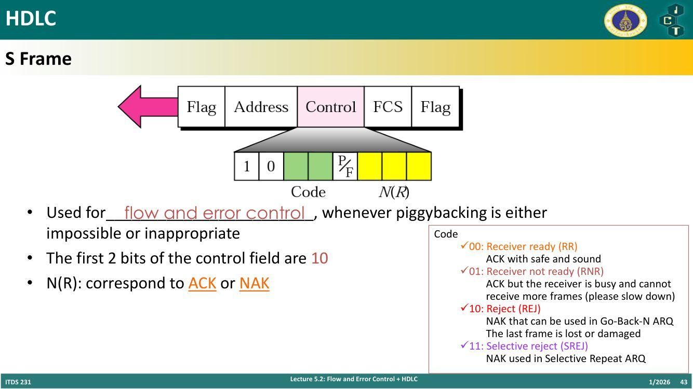
💡 จำ: REJ ↔ GBN (ปฏิเสธแล้วย้อนส่งทั้งชุด), SREJ ↔ SR (ปฏิเสธเฉพาะตัว)
10.9 U-Frame
Control field: 2 บิตแรกเป็น 11
- ใช้แลกเปลี่ยน session management และ control information ระหว่างอุปกรณ์ที่เชื่อมต่อกัน
- มี info field สำหรับ system management
- U-frame code แบ่งเป็น 2 ส่วน: prefix 2 บิตก่อน P/F และ prefix 3 บิตหลัง P/F
| Command/response | ความหมาย |
|---|---|
| SNRM | Set normal response mode |
| SNRME | Set normal response mode (extended) |
| SABM | Set asynchronous balanced mode |
| SABME | Set asynchronous balanced mode (extended) |
| UP | Unnumbered poll |
| UI | Unnumbered information |
| UA | Unnumbered acknowledgment |
| RD | Request disconnect |
| DISC | Disconnect |
| DM | Disconnect mode |
| RIM | Request information mode |
| SIM | Set initialization mode |
| RSET | Reset |
| XID | Exchange ID |
| FRMR | Frame reject |
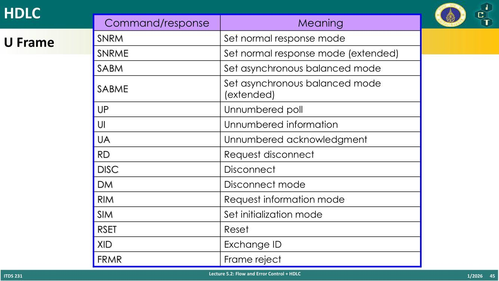
10.10 HDLC: Connection Establishment และ Release ⭐
- Connection establishment: Node A ส่ง U-frame (SABM) → Node B ตอบ U-frame (UA)
- Data transfer
- Connection release: Node A ส่ง U-frame (DISC) → Node B ตอบ U-frame (UA)
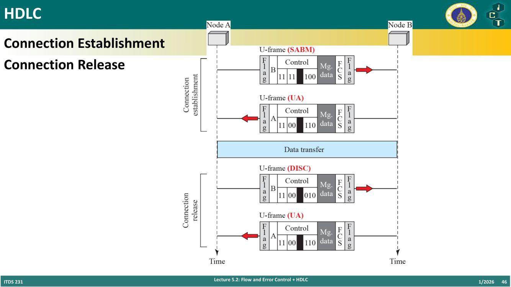
10.11 HDLC: Go-Back-N — Piggybacking without Error
- A ส่ง I-frame N(S)=0, N(R)=0 ไปหา B
- A ส่ง I-frame N(S)=1, N(R)=0
- B ส่ง I-frame N(S)=0, N(R)=2 กลับ → "Send my 0, wants your 2!" (ACK frame 0, 1 ของ A ไปด้วย)
- B ส่ง I-frame N(S)=1, N(R)=2 → "Send my 1, wants your 2!"
- B ส่ง I-frame N(S)=2, N(R)=2 → "Send my 2, wants your 2!"
- A ไม่มีข้อมูลจะส่ง จึงตอบด้วย S-frame RR, N(R)=3 → "Wants your 3, Receiver Ready"
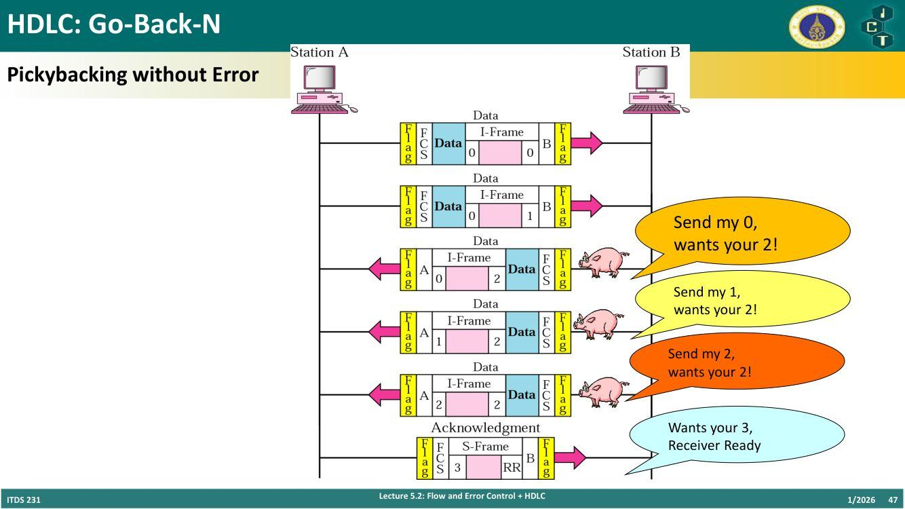
11. Performance ⭐⭐
11.1 ตัวอย่าง: Stop-and-Wait ARQ
โจทย์: ระยะทาง 1000 m, ความเร็ว propagation 500 m/s (ไม่คิด transmission delay), frame ขนาด 100 bits, ต้องส่งข้อมูลรวม 1000 bits — ใช้เวลาทั้งหมดเท่าไหร่?
- เวลาไป-กลับ (round trip) ต่อ frame = 2 × 1000 / 500 = 4 วินาที
- จำนวน frame = 1000 / 100 = 10 frames
- Stop-and-Wait ส่งทีละ frame → 10 × 4 = 40 วินาที
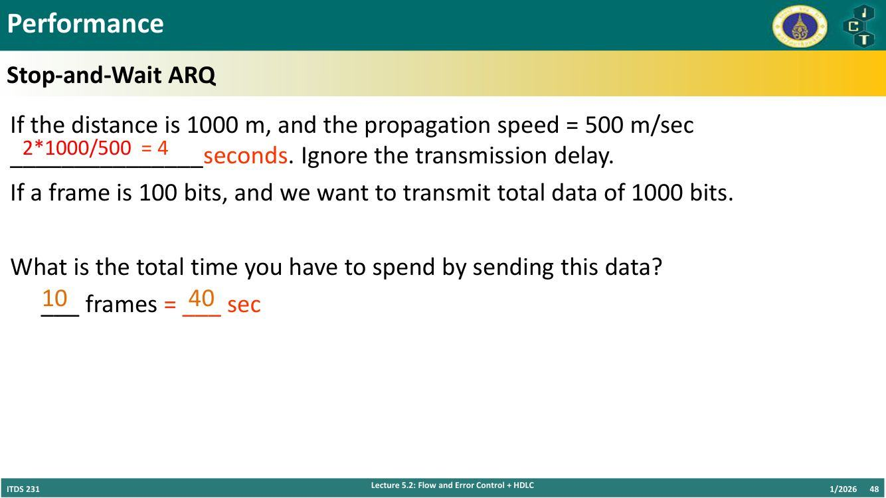
11.2 ตัวอย่าง: Go-Back-N ARQ
โจทย์เดียวกัน แต่ส่งได้ 2 frames พร้อมกัน (N = 2)
- round trip = 4 วินาที, 10 frames
- ส่งครั้งละ 2 → 10 / 2 = 5 รอบ × 4 = 20 วินาที
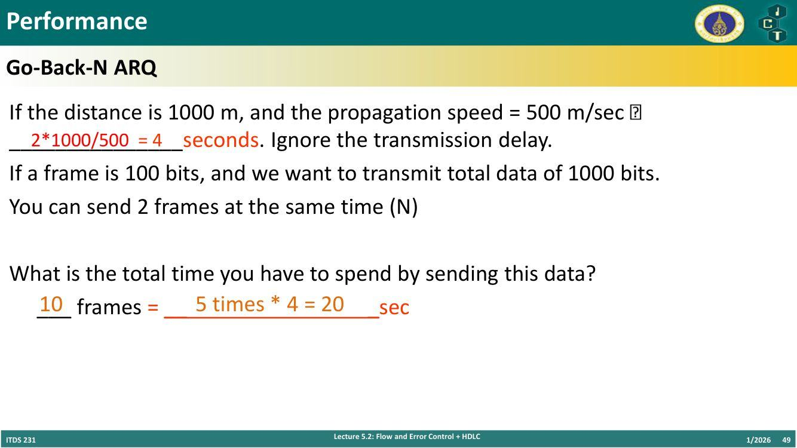
11.3 Bandwidth-Delay Product
- วัดประสิทธิภาพระบบ ARQ = bandwidth (bps) × round-trip delay (วินาที)
- = จำนวนบิตที่ระบบส่งออกไปได้ ระหว่างรอ ACK จากผู้รับ
- ถ้า delay ยาว ผู้ส่งอาจ ใช้ window หมด (exhaust) ระหว่างรอ
11.4 ตัวอย่าง: Utilization ของ Stop-and-Wait ⭐
โจทย์: Stop-and-Wait, bandwidth 1 Mbps, 1 บิตใช้ 20 ms ไป-กลับ, frame 1000 bits — bandwidth-delay product และ utilization เป็นเท่าไหร่?
- Bandwidth-delay product = 1 × 10⁶ bits/s × 20 × 10⁻³ s = 20,000 bits
- ระบบส่งได้ 20,000 บิตในช่วงไป-กลับ แต่ Stop-and-Wait ส่งแค่ 1,000 บิต
- Utilization = 1,000 / 20,000 = 5%
- → บนลิงก์ bandwidth สูงหรือ delay ยาว Stop-and-Wait เปลืองความจุลิงก์
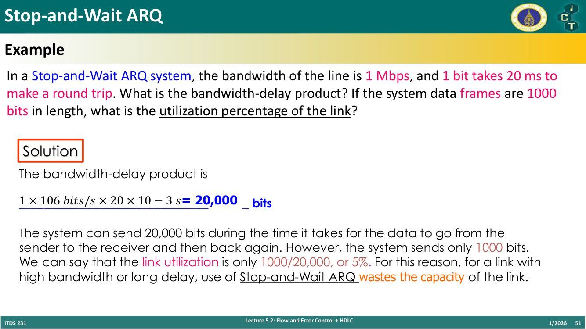
11.5 ตัวอย่าง: Utilization ของ Go-Back-N ⭐
โจทย์: ลิงก์เดียวกันแต่ใช้ Go-Back-N ARQ กับ 15-frame sequence
- bandwidth-delay product ยังเป็น 20,000
- ส่งได้สูงสุด 15 frames = 15,000 bits ในหนึ่ง round trip
- Utilization = 15,000 / 20,000 = 75%
- ⚠️ ถ้ามี frame เสีย utilization จะน้อยกว่านี้มาก เพราะต้องส่งใหม่
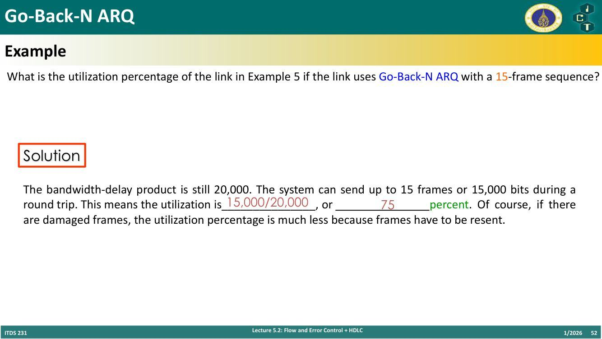
12. Summary: ขนาด Window ⭐
Selective Repeat ARQ ถ้ามี 4 บิต:
- sequence number ทั้งหมด = 2⁴ = 16 → 0 ถึง 15
- window size = 2⁴ / 2 = 8 ทั้งฝั่ง sender และ receiver → เป็นเลขคู่เสมอ
Go-Back-N ARQ ถ้ามี 4 บิต:
- receiver window = 1
- sender window = 2^m − 1 = 16 − 1 = 15 → เป็นเลขคี่เสมอ
ทั้งสอง ARQ ถ้าส่ง 20 packets ไม่มีหาย ลำดับ sequence number คือ: 0, 1, 2, 3, 4, 5, 6, 7, 8, 9, 10, 11, 12, 13, 14, 15, 0, 1, 2, 3
| m บิต | จำนวนเลข | GBN send window | GBN recv window | SR send = recv window |
|---|---|---|---|---|
| 1 | 2 | 1 | 1 | 1 |
| 2 | 4 | 3 | 1 | 2 |
| 3 | 8 | 7 | 1 | 4 |
| 4 | 16 | 15 | 1 | 8 |
13. คำศัพท์สำคัญ
| คำศัพท์ | ความหมาย | จำง่าย ๆ ว่า |
|---|---|---|
| Flow control | คุมอัตราผู้ส่งไม่ให้ผู้รับรับไม่ไหว | เทน้ำใส่แก้ว |
| Buffer overflow | buffer ผู้รับเต็มจน frame หาย | |
| Sender / Receiver buffer | ที่พัก frame รอส่ง/ส่งซ้ำ / รอชั้นบน | |
| ACK / NAK | ยืนยันรับได้ / ขอส่งใหม่ | |
| ARQ | Automatic Repeat reQuest | |
| Noiseless / Noisy channel | ช่องไม่มี / มี error | |
| Simple protocol | ไม่มี flow และ error control | |
| Stop-and-Wait ARQ | ส่งทีละ frame รอ ACK | window 1, seq 0/1 |
| S / R | seq ของ frame ที่ส่ง / frame ถัดไปที่รอ | |
| Time-out | timer หมดแล้วส่งใหม่ | |
| Duplicate frame | frame ซ้ำจากการส่งใหม่ ตรวจด้วย seq no. | |
| Pipelining | ส่งหลาย frame ก่อนได้ ACK | |
| Outstanding frame | ส่งแล้วยังไม่ได้ ACK | |
| Sliding window | window เลื่อนเมื่อได้ ACK | |
| S_f / S_n / R_n | first outstanding / next to send / next expected | |
| Go-Back-N | receiver window 1, cumulative ACK, ส่งใหม่ทั้งชุด | ≤ 2^m − 1 |
| Cumulative ACK | ACK n = รับทุก frame ก่อน n แล้ว | |
| Selective Repeat | buffer frame ผิดลำดับ, individual ACK, ส่งใหม่เฉพาะตัว | ≤ 2^(m−1) |
| Individual ACK | ACK แยกแต่ละ frame | |
| Piggybacking | ใส่ ACK ใน data frame ขากลับ | ขี่หลังหมู |
| HDLC | bit-oriented, point-to-point/multipoint | flag 0x7E |
| NRM / ABM | primary-secondary / balanced | |
| Connectionless / Connection-oriented | ไม่มี / มี logical link ก่อนส่ง | |
| Control field | 1–2 ไบต์ flow/error control | |
| FCS | ITU-T CRC 2 หรือ 4 ไบต์ | |
| I-frame | ข้อมูล + piggyback, บิตแรก 0 | N(S), N(R) |
| S-frame | control, บิตแรก 10 | RR, RNR, REJ, SREJ |
| U-frame | system management, บิตแรก 11 | SABM, UA, DISC |
| P/F | Poll (primary→secondary) / Final (secondary→primary) | |
| N(S) / N(R) | seq no. ของ frame / ACK ที่ piggyback | |
| RR / RNR / REJ / SREJ | ACK / ยุ่ง ช้าลง / NAK GBN / NAK SR | |
| SABM / UA / DISC | ตั้งโหมด balanced / ตอบรับ / ตัดการเชื่อมต่อ | |
| PPP Protocol field / Cisco HDLC Type field | ระบุโปรโตคอลชั้นบน | |
| LAPB | HDLC-based สำหรับ X.25 | |
| DLCI / FECN / BECN / DE | ฟิลด์ใน Frame Relay | |
| ATM cell | fixed 53 bytes (5 header + 48 payload) | |
| Bandwidth-delay product | bandwidth × round-trip delay | บิตที่ส่งได้ระหว่างรอ ACK |
| Utilization | บิตที่ส่งจริง / bandwidth-delay product |
14. สรุปท้ายบท / จุดที่มักออกสอบ
- Flow control กันผู้รับรับไม่ทัน (buffer overflow) และไม่ให้ส่งช้าเกิน; ใช้ buffer ทั้งสองฝั่ง; feedback = ACK/NAK
- Noiseless: Simplest, Stop-and-Wait / Noisy: Stop-and-Wait ARQ, Go-Back-N ARQ, Selective Repeat ARQ
- Stop-and-Wait ARQ: ทีละ frame, เก็บสำเนา, error → ไม่ส่ง ACK → timeout → ส่งใหม่; seq 0/1; ACK n = รอ frame n
- 4 สถานการณ์ Stop-and-Wait: normal, lost frame, lost ACK, delayed ACK — seq no. ตรวจ frame ซ้ำ, ACK no. ตรวจ ACK เก่า
- Pipelining มีใน GBN และ SR, ไม่มีใน Stop-and-Wait
- GBN: send window ≤ 2^m − 1, receive window = 1, cumulative ACK, timer เดียว, timeout → ส่งใหม่ทั้งชุด, frame ผิดลำดับทิ้ง
- ทำไม GBN window < 2^m: window = 2^m แล้ว frame 0 เก่าจะถูกรับผิดเป็น frame 0 ใหม่
- GBN ACK หาย: ACK ตัวถัดไปยืนยันแทนได้ (cumulative) ไม่ต้องส่งใหม่
- Stop-and-Wait = GBN ที่ window = 1; piggybacking = ACK ใน data frame
- ข้อเสีย GBN: error บ่อย → ส่งซ้ำเยอะ, เปลือง bandwidth, delay, congestion
- SR: send = receive window ≤ 2^(m−1), buffer frame ผิดลำดับ, individual ACK, timer ต่อ frame, NAK/SREJ, ส่งใหม่เฉพาะ frame ที่หาย
- ทำไม SR window ≤ 2^(m−1): window ใหญ่กว่านั้น frame 0 เก่าจะตกใน receive window ใหม่ → erroneously accepted
- 4 บิต: SR window 8 (คู่), GBN send 15 (คี่) receive 1; ส่ง 20 packets → seq 0–15, 0–3
- HDLC: bit-oriented, point-to-point/multipoint, flag + bit stuffing, ARQ; modes: connectionless, NRM, ABM
- HDLC frame: Flag | Address | Control (1–2 bytes) | Information | FCS (CRC 2/4 bytes) | Flag
- PPP เพิ่ม Protocol field (open standard, Address 0xFF, Control 0x03); Cisco HDLC เพิ่ม Type field (proprietary); ATM = fixed 53-byte cell
- Frame types: I (บิตแรก 0, N(S), P/F, N(R)), S (10, code, P/F, N(R)), U (11)
- S-frame codes: 00 RR, 01 RNR, 10 REJ (GBN), 11 SREJ (SR)
- Connection: SABM → UA → data → DISC → UA
- Piggyback ตัวอย่าง: "Send my 0, wants your 2!" = N(S)=0, N(R)=2; ปิดด้วย S-frame RR N(R)=3
- Performance: 1000 m, 500 m/s, 10 frames → round trip 4 s → Stop-and-Wait 40 s, GBN (N=2) 20 s
- Bandwidth-delay product: 1 Mbps × 20 ms = 20,000 bits → Stop-and-Wait utilization 5%, GBN 15 frames 75%